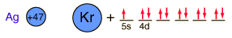

Silver
Silver is a soft white metal which is denser than copper and has a lower melting point. It is used in coinage, tableware, and jewelry. In an amalgum with mercury, it is used for the fillings of teeth. A large amount of silver is used in photography.
Coinage silver in the United States has been typically 90% silver and 10% copper. British sterling silver is 92.5% silver and 7.5% copper.
The compound silver nitrate (AgNO3) is used to cauterize sores and wounds. It is easily converted to metallic silver by contact with organic matter, such as skin or cloth, and is used in making indelible ink.
The silver ion makes an excellent antiseptic, so several silver compounds are used medically as germicidal agents.
Fine grains of silver bromide suspended in a thin layer of gelatin forms a photographic emulsion. The emulsion is formed on a sheet of cellulose acetate. The silver bromide is light sensitive, and undergoes photochemical decomposition. The gelatin increases this light sensitivity, perhaps because of the sulfur in it. The decomposed silver bromide registers an image, and development with an alkaline solution of an organic reducing agent like hydroquinone causes the sensitized grains to be reduced to metallic silver, while unexposed grains remain unchanged.
The undeveloped grains of silver bromide are removed by a fixing solution containing the thiosulfate ion, which forms the soluble silver thiosulfate complex. The negative can then be washed, leaving the silver image.
Silver is sometimes found in nature in metallic form. It forms a sulfide mineral Ag2S called acanthite. Mineral forms of silver include sulfides formed with antimony called Stephanite, miargyrite and pyrargyrite. Silver joins with lead and antimony in the sulfide andorite, AgPbSb3S6. Silver with copper and antimony forms the sulfide polybasite. Silver with arsenic forms the sulfide proustite.
In the mineral dyscrasite, silver bonds directly to antimony in the form Ag3Sb. Silver bonds to tellurium in the mineral hessite, Ag2Te. Silver appears in the chloride minerals boleite and chlorargyrite and the bromide mineral bromargyrite.
Silver is one of the few exceptions to the general order of filling of electron orbitals like copper directly above it in the Periodic Table. It fills all ten 4d states before it fills the second 5s state. Just those levels outside a krypton core are shown.

|